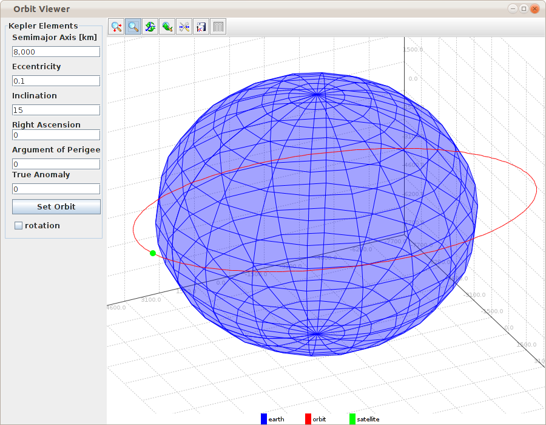
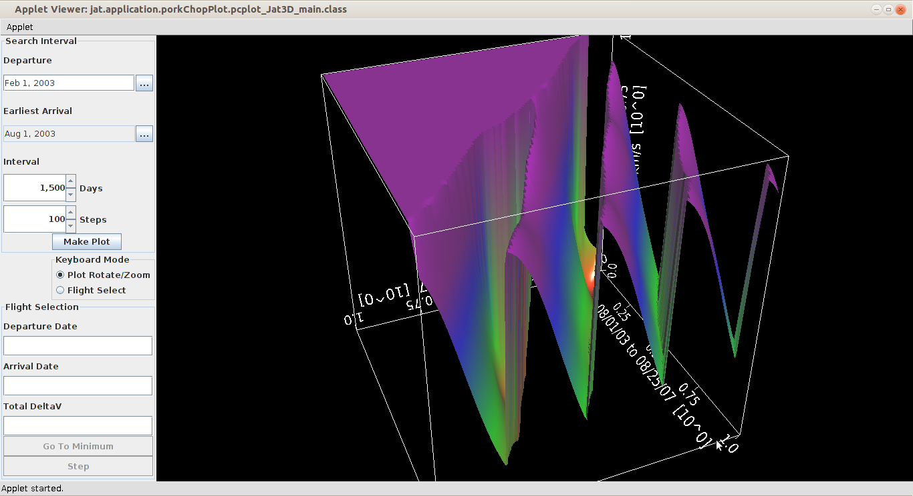
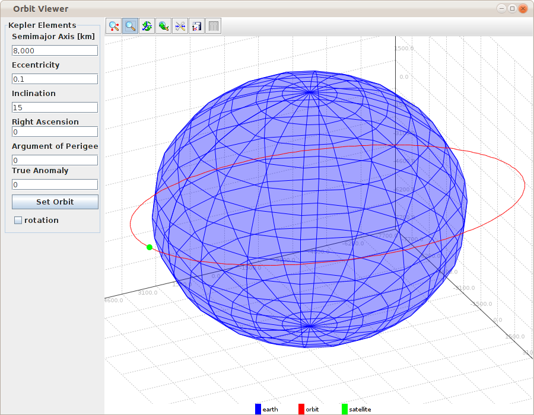
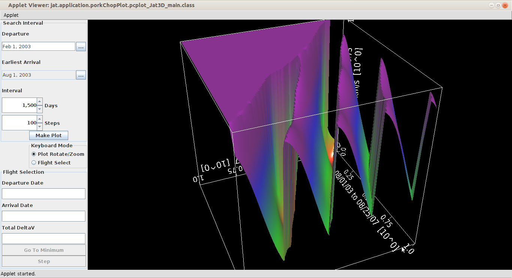

| Attitude Simulator |
Date Converter |
| Orbit Viewer  |
Pork Chop Plot  |
| Solar System Mission Planner |
| Problem |
Solution |
| I don't have Java3D on my computer. |
Install Java3D. On Ubuntu, open the software center and search for Java3D. |
| I try run a Jat3D application. It does not
run at all or I get a security warning. |
Java's security policy does not allow a
browser to use native libraries (such has the 3D graphics
library) unless explicitly permitted.
On Ubuntu Linux, this is accomplished by creating a security
policy file named ".java.policy" or "java.policy" in your
home directory. For simplicity, you could grant Java all
permissions to test the software, but you should not leave
this in place as it could compromise the security of your
system. Example: Contents of file /home/jatuser/java.policy grant { permission java.security.AllPermission; } You will have to close all open browser windows and restart the web browser to enact the policy change. |
| I try run a Jat3D application. It does not
run at all or I get the error:
java.lang.UnsatisfiedLinkError: no j3dcore-ogl in
java.library.path |
The library may not be in the library path of
the web browser. Copy the library into the /lib folder. Open a terminal and run sudo cp /usr/lib/jni/libj3dcore-ogl.so /lib/ Then, restart the browser. |
| I run a Jat3D application and when I try to
run another Jat3D application, I get the error: java.lang.UnsatisfiedLinkError: Native Library /lib/libj3dcore-ogl.so already loaded in another classloader |
Close the web browser and restart it. Reload
index.html and the application. |